Guide Mis à Jour de l'Île Mystérieuse : Hero Wars Dominion Era (Web/Facebook)
- Auteur: Alexandre Domingos. .
L'événement Île Mystérieuse dans Hero Wars : Dominion Era offre aux joueurs une occasion passionnante de naviguer à travers une carte semblable à un labyrinthe remplie de récompenses cachées, de coffres de Drapeaux de Guerre et de ressources puissantes. Que vous soyez un explorateur chevronné ou que vous affrontiez l'île pour la première fois, ce guide vous aidera à profiter au maximum de votre aventure.
Dans ce guide mis à jour, vous découvrirez les meilleurs itinéraires pour atteindre les tours finales, des astuces pour maximiser vos récompenses et des conseils clés sur la collecte de bûches en bois pour débloquer les ponts. Des émeraudes aux coffres d'artefacts en passant par les trésors saisonniers, chaque étape compte, alors planifiez bien vos déplacements !
1. Coffre de Drapeau de Guerre
Chaque mois, Alexandre Games révèle le meilleur itinéraire pour que les joueurs F2P obtiennent le Drapeau de Guerre plus facilement, sans gaspiller de Mouvements d’Explorateur.
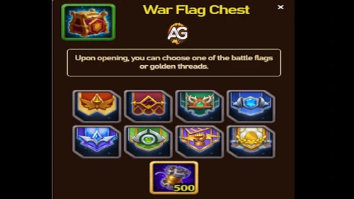
2. Catalyseur Élémentaire
Catalyseur Élémentaire : Utilisé dans la Fusion d’Esprit Élémentaire pour obtenir des Compétences d’Affinité élémentaire.
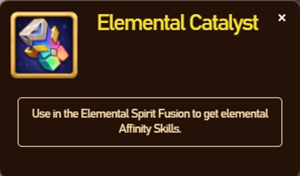
3. Catalyseur Primal
Catalyseur Primal : Utilisé dans la Fusion d’Esprit Élémentaire pour obtenir des Compétences d’Affinité primale.
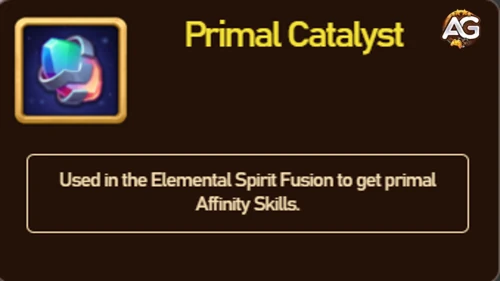
4. Cristal de Souhait
Cristal de Souhait : Se transforme en 4 Cristaux Communs / 2 Cristaux Vibrants / 1 Cristal Radieux, sélectionné au hasard.
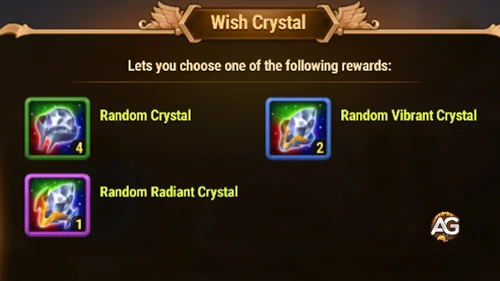
5. Insigne de Souhait
Insigne de Souhait : Se transforme en 2 Insignes Communs / 1 Insigne Supérieur, sélectionné au hasard.
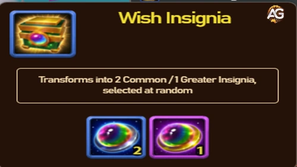
6. Coffre d’Artéfact Absolu
Coffre d’Artéfact Absolu : Contient des ressources d’Artéfact Absolu. Vous pouvez choisir la récompense lors de l’ouverture du coffre.
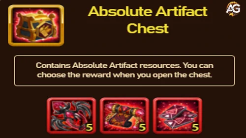
7. Coffre de Saison
Beaucoup de ressources pour votre développement.
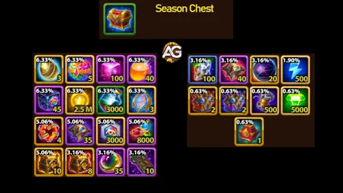
8. Coffre de Motifs
Contient des motifs de drapeau de guerre. Vous pouvez choisir la récompense lors de l’ouverture du coffre.
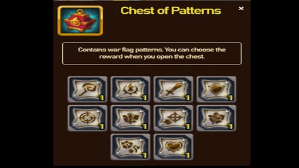
9. Sphère d’Artéfact de Titan
Si vous en manquez, optez plutôt pour les 500 Sphères d’Artéfact de Titan. Ces sphères sont une bonne option pour les débutants. Utilisez-les à l’Autel des Éléments pour obtenir des Fragments d’Artéfact de Titan et des Fragments d’Esprit Élémentaire.
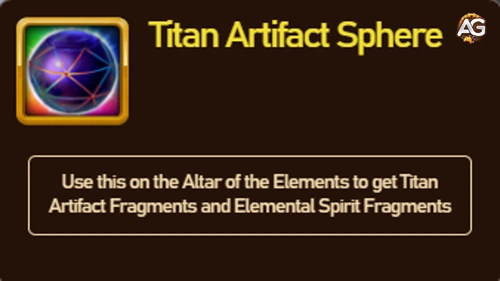
10. Émeraudes : La Meilleure Récompense
Après avoir avancé sur les itinéraires recommandés, vous pouvez choisir de dépenser quelques Mouvements d’Explorateur supplémentaires pour réclamer les Émeraudes. Les Émeraudes restent la ressource la plus précieuse du jeu et peuvent être utilisées dans de nombreux événements.
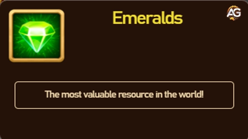
Comment fonctionne l’Île Mystérieuse ?
En naviguant sur la carte de l’Île Mystérieuse, vous rencontrerez des icônes bleues avec un point d’interrogation, chacune marquant une étape possible pour votre explorateur. La carte est structurée comme un labyrinthe, et à chaque déplacement, vous révélez une case cachée. Votre objectif final est d’atteindre la tour située à l’extrémité de la carte.
Les ponts de l’île doivent être activés pour progresser, et vous le ferez en collectant des bûches de bois disséminées sur votre chemin. Gardez à l’esprit que tous les joueurs ont la même disposition et les mêmes emplacements de récompenses pendant l’événement.
Meilleures Récompenses Disponibles sur l’Île Mystérieuse
- Gagnez jusqu’à 15 000 Émeraudes ainsi que deux Coffres à Motifs exclusifs
- Collectez 110 Coffres de Pierres d’Apparence, chacun accompagné de 2 Coffres à Motifs
- Récupérez 75 000 Pierres d’Apparence de Titan plus 3 Coffres à Motifs bonus
- Recevez 500 Sphères d’Artéfact de Titan accompagnées de 2 Coffres à Motifs
- Débloquez 100 Coffres d’Artéfact Absolu avec 2 Coffres à Motifs
Récompenses Secondaires et Bonus
- Coffre de Drapeau de Guerre
- Cadeau Violet du Dominion
- Coffres à Motifs supplémentaires
- Coffres de Trésor Saisonniers avec contenu aléatoire
Chemins Optimaux vers les Grandes Récompenses
À chaque saison, les itinéraires les plus courts et efficaces vers les meilleures récompenses sont découverts et cartographiés. Dans la version d’octobre de l’Île Mystérieuse, certains chemins nécessitent moins de mouvements pour atteindre les grandes tours de récompense. Cependant, des récompenses précieuses se trouvent aussi légèrement en dehors des sentiers principaux, alors envisagez des détours stratégiques si nécessaire.
L’énergie de l’explorateur est consommée à chaque déplacement. Si votre énergie s’épuise et n’est pas rechargée, la récupération automatique s’arrête. Il est recommandé de planifier votre exploration pour les moments où vous participez activement à l’événement.
Mécanique des Coffres de Trésor Saisonniers
Sur toute la carte, vous trouverez des coffres de trésor saisonniers contenant des récompenses aléatoires. Ces récompenses sont déterminées au moment de l’ouverture du coffre. Le fonctionnement exact de la génération de ces coffres reste un peu flou, mais ils offrent des matériaux et des devises précieux.
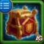
Tout sur les Coffres de Drapeau de Guerre
Les Drapeaux de Guerre sont des objets puissants dans Dominion Era, et vous pouvez les obtenir dans des coffres spéciaux appelés Coffres de Drapeau de Guerre. Il existe quatre versions différentes de ces coffres, et les drapeaux disponibles varient selon la saison de l’événement.
Coffre de Drapeau de Guerre – Version 1
Offre le choix entre les bannières suivantes : Déclin, Puissance des Familiers, Ferveur ou le Fil d’Or.
| Récompense | Image |
|---|---|
| Drapeau de Guerre du Déclin |

|
| Drapeau de Guerre de la Puissance des Familiers |

|
| Drapeau de Guerre de la Ferveur |

|
| 500 Fils d’Or |
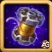 |
Coffre de Drapeau de Guerre – Version 2
Contient des bannières de la sélection de la saison précédente, vous permettant de rattraper ou de renforcer d’anciennes stratégies de drapeaux.
| Récompense | Image |
|---|---|
| Drapeau de Guerre de la Ferveur |
|
| 500 Fils d’Or |
Coffre de Drapeau de Guerre – Version 3
Offre une sélection comprenant Déclin, Puissance des Familiers, Givre, Guerriers Rapides et le Fil d’Or.
| Drapeau de Guerre | Image |
|---|---|
| Drapeau de Guerre des Guerriers Rapides |

|
| Drapeau de Guerre du Déclin |
|
| Drapeau de Guerre de la Puissance des Familiers |
|
| Drapeau de Guerre de la Ferveur |
|
| Drapeau de Guerre du Givre |

|
| 500 Fils d’Or |
Coffre de Drapeau de Guerre – Version 4
Donne accès à un ensemble de six drapeaux de guerre au total, offrant plus de flexibilité dans votre collection de bannières. Drapeau de Guerre des Guerriers Rapides
| Drapeau de Guerre | Image |
|---|---|
| Drapeau de Guerre des Guerriers Rapides |
|
| Drapeau de Guerre du Déclin |
|
| Drapeau de Guerre de la Puissance des Familiers |
|
| Drapeau de Guerre de la Ferveur |
|
| Drapeau de Guerre du Givre |
|
| Drapeau de Guerre de la Récupération |

|
| 500 Fils d’Or |
Comment obtenir des Drapeaux de Guerre dans Hero Wars : Dominion Era
Chaque mois, l’événement Île Mystérieuse offre une opportunité de gagner des Drapeaux de Guerre. Consultez le blog Alexandre Games pour des guides mis à jour détaillant les meilleurs itinéraires et stratégies efficaces pour chaque saison. Puisqu’il existe quatre types de drapeaux et que leur disponibilité change à chaque fois, rester informé est essentiel pour maximiser vos récompenses.
Les joueurs free-to-play peuvent-ils obtenir des Drapeaux de Guerre ?
Absolument ! Même en tant que joueur free-to-play, il est possible d’obtenir au moins un Drapeau de Guerre à chaque événement Île Mystérieuse. La clé est de suivre un chemin efficace et de bien gérer vos Mouvements d’Explorateur. Chaque mois, le blog Alexandre Games partage des guides mis à jour mettant en avant les meilleurs itinéraires F2P pour garantir les récompenses minimales, sans aucune dépense !
 Les Mouvements d’Explorateur expirent-ils après la fin d’une Aventure Saisonnière ?
Les Mouvements d’Explorateur expirent-ils après la fin d’une Aventure Saisonnière ?
Pas d’inquiétude ! Si vous avez encore des Mouvements d’Explorateur inutilisés à la fin de l’Aventure Saisonnière en cours, vous ne les perdrez pas. Ces mouvements restants seront reportés et disponibles lors du prochain événement Aventure Saisonnière. C’est un excellent moyen de prendre de l’avance pour les défis futurs !
Conclusion
L’événement Île Mystérieuse est bien plus qu’une simple carte d’exploration. Avec une planification stratégique, des déplacements efficaces et une attention portée aux récompenses cachées, vous pouvez obtenir certaines des ressources les plus précieuses de Hero Wars : Dominion Era. N’oubliez pas de suivre des sources fiables comme Alexandre Games pour des solutions mises à jour et des guides d’itinéraires optimaux chaque mois !

Découvrez de nouvelles compétences avec nos héros vedettes !

 Hero Wars : Dominion Era Tier List 2025 Meilleurs Héros Classés(EN)
Hero Wars : Dominion Era Tier List 2025 Meilleurs Héros Classés(EN)  Calendrier des Événements Hero Wars Dominion Era (FR)
Calendrier des Événements Hero Wars Dominion Era (FR) Laissez votre avis !
Avez-vous apprécié notre guide de l’Île Mystérieuse pour Hero Wars Web et Facebook ? Y a-t-il quelque chose que vous n’avez pas compris ou que vous aimeriez suggérer de modifier ? Nous vous invitons à rejoindre notre section de commentaires sur le blog Alexandre Games. N’hésitez pas à donner votre avis, à poser vos questions et à partager vos suggestions.
Cliquez sur le bouton ci-dessous pour commencer :